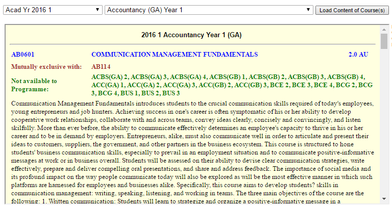

NUSMods 3.0
Living on the cutting edge
Hi, I'm Li Kai
I built Modify.sg
And I'm Yang Shun
I work at Grab, tutor people, built NUSMods and more.
Outline
- Modify.sg
-
NUSMods v3.0
- New Application Architecture
- Technical Challenges
- Moving Forward
Motivation

It's time for
A little demo
Modify was built with VueJS
Why Vue?
Easy to learn
-
{{ todo.text }}
It is fast.

It's getting increasingly popular
“But if you look at percentages, it turns out the uncontested leader is instead React. What's more surprising is Vue's performance, coming second by both measures [Interest and Satisfaction].”
History of NUSMods
A very brief oneNUSMods v3.0 collaboration
All hail Facebook
New Stack
- Yarn By facebook
- Webpack
- React By facebook
- Redux By facebook
- Jest? By facebook
- AVA
Design Considerations
Mobile First
Develop for the phone first, using Chrome/Firefox's mobile debugger
Alternative to edit lessons: Tapping vs Drag n Drop
Theme Colors
Modify.sg
- Picked from Material Design palette
- Accessibility testing
V3
- Killing of unpopular colors
- The feature everyone wanted: Color pickers
Search Implementation
Smarter search and comparison
Currently: All substrings are included, module codes' ranking come after descriptions
V3: Smarter rankings, less typing!
Flexible start/end timings
We realised lessons that start at 6am exists
So did lessons that ended at midnight
So which hours do we present?
Analysis!
~90% of lessons lie between 10am and 7pm
Correlation with how the packed the bus is? -insert funny picture-
Timetable Implementation
A tale of tables, boxes and blocks
Horizontal / Vertical Mode
Problem arised when:
NTU people complained about horizontal mode.
NUS people complained about vertical mode.
Solution: Toggle-able orientations
React
Why React
Just for Fun: Parsing NTU
Crawling with Scrapy I thought this was a Javascript talk?
NTU load their data in an iframe.
Steps:
- Get the iframe url
-
Url has a subject code search parameter"...&r_subj_code=CS&boption=Search"
-
How do we get all modules?Pass in nothing!"...&r_subj_code=&boption=Search"
Modern HTML layout
Community
Easy to parse via selectors
Layout using tables
AC2103
RISK MANAGEMENT, CONTROL AND ETHICS
4.0
ACC
Prerequisite:
AC2101(Corequisite) & AC2401(Corequisite) & AC3101
Mutually exclusive with:
AA205, AC3104
No well defined layers
Solution?
Select using color tags
Select using   that was in between each module somehow